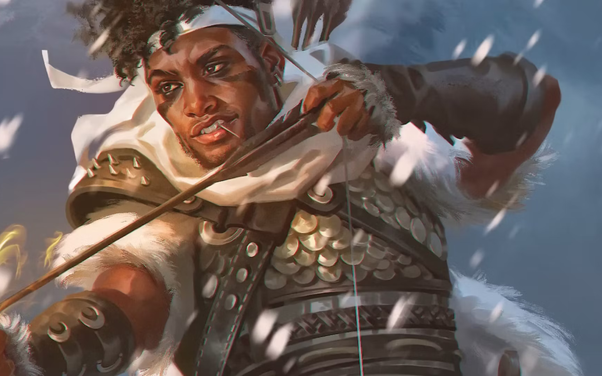

Esta clase se suele especializar en ir a distancia con arcos o ballesta, con la capacidad de hacer daño extra al enemigo que ellos quieran y pudiendo hacer mano a unos pocos hechizos. Suelen tener una vida media y tienen una capacidad media de defensa
El explorador es una clase que suele ir a distancia (o cuerpo a cuerpo si quereis), se aprovecha de algunos hechizos que puede aprender, como marca del cazador, para hacer daño extra a sus enemigos y da ventajas a la hora de viajar al grupo. A priori pueden parecer muy simples, pero sus subclases les aportan mucho, solo que aquí no hablaremos de ellas, ya que estamos aquí para un primer contacto.